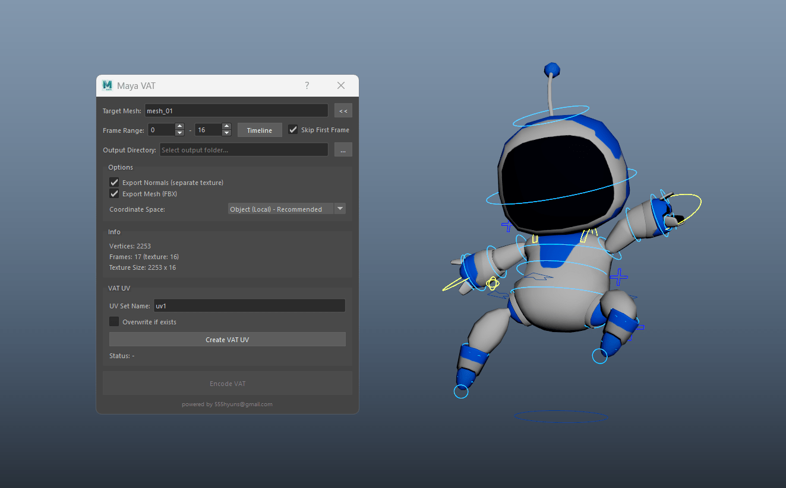

Why VAT?
Vertex animation textures store per-vertex positions for every frame in an image. A simple vertex shader reads them back, so you can render thousands of animated instances (crowds, foliage, destruction, cloth, FX) without skeletal skinning cost. Most VAT tools live in Houdini. This one runs entirely inside Maya, in pure Python.
Features
Anything that moves
skinCluster, blend shapes, lattices, nonlinear deformers. If it deforms the mesh, it bakes.
Zero dependencies
Pure Python + Maya API. Writes PNGs without PIL/numpy. Maya 2022+ with PySide2/PySide6.
Object or World space
Object space keeps runtime movement and rotation working. World space suits static props.
Auto VAT UVs
Generates a dedicated UV set that maps each vertex to its texture column.
Skip first frame
Use a T-pose or bind pose as the reference mesh without baking it into the animation.
One-click export
Position PNG, optional normal PNG, bounds JSON and a skin-free proxy FBX.
Install & Run
- Download the latest release and extract it.
- Rename the folder to
maya_vatand copy it toDocuments/maya/<version>/scripts/. - In Maya's Script Editor (Python):
import maya_vat
maya_vat.show()
Output
mesh_vat/
mesh_vat.png # position deltas (width = vertices, height = frames)
mesh_vnrm.png # normals (optional)
mesh_remap.json # bounds min/max for decoding
mesh.fbx # proxy mesh, first frame, VAT_UV setEach pixel stores (ΔX, ΔY, ΔZ) relative to the proxy mesh, normalized to 0–255 using the min/max in the JSON. To decode in a vertex shader:
// uv = VAT_UV (u = vertex column), v offset by current frame
// rgb = texture sample (0..1), point filtering, no sRGB, no mips
float3 delta = lerp(boundsMin, boundsMax, rgb);
position = proxyPosition + delta;Engine support
| Engine | How |
|---|---|
| Unreal Engine | Material World Position Offset reading the VAT texture (point sampling, no compression/sRGB) |
| Unity | Shader Graph / HLSL vertex stage, sample with tex2Dlod |
| PlayCanvas / three.js / WebGL | Custom vertex shader chunk. Normal X is pre-flipped for PlayCanvas. |
FAQ
Do I need Houdini?
No. Everything is baked inside Maya.
Object space or world space?
Use Object space for characters that move or rotate at runtime, including root-motion clips. World space is only for objects with a fixed transform.
Is it free for commercial use?
Yes, it's MIT licensed.